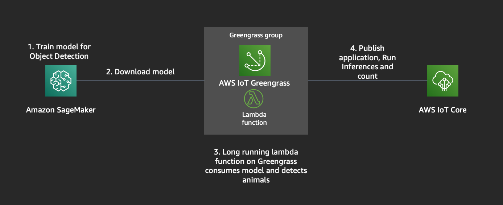
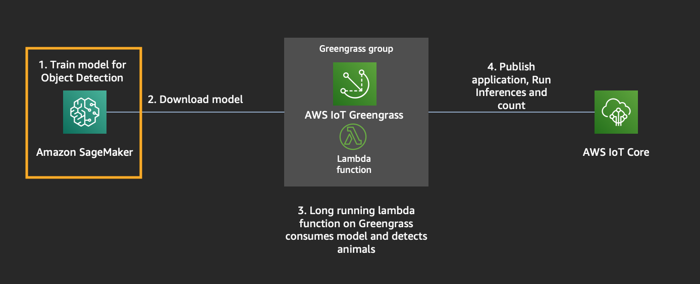
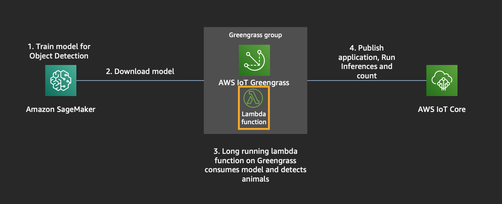
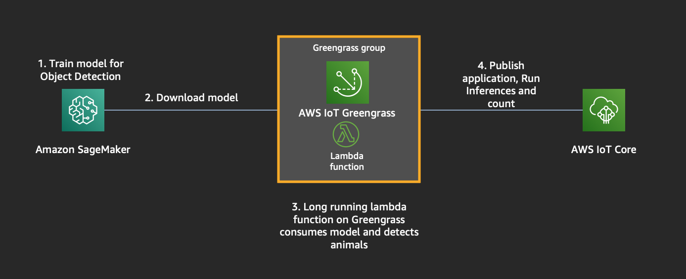

Today, we will be building an application to detect animals at the edge. We will use an EC2 instance as our target edge device, but this device can be anything like a Raspberry Pi, NVIDIA TX2, Nano etc.
To achieve this, we require a Machine Learning model that can detect animals and the hardware to run the application on.

Module 0: Set up Infrastructure
Module 1: Build an OD(Object Detection) Model
Module 2: Build Lambda application
Module 3: Set up Greengrass group, resources with lambda+ML and download certs
Module 4: Ready to Run Inference
This workshop requires,
—————————————————————————————————————————————————————————————————————————————————————————————
At the top right hand corner of the AWS Console, you’ll see a Support dropdown. To the left of that is the region selection dropdown. Choose US West (Oregon).
Then you’ll need to create an SSH key pair which will be used to login to the instances once provisioned. Go to the EC2 Dashboard and click on Key Pairs in the left menu under Network & Security. Click Create Key Pair, provide a name (“reinvent”) when prompted, and click Create. Once created, the private key in the form of reinvent.pem file will be automatically downloaded.
If you’re using linux or mac, change the permissions of the .pem file to be less open.
$ chmod 400 reinvent.pem
If you’re on windows you’ll need to convert the .pem file to .ppk to work with putty. Here is a link to instructions for the file conversion - http://docs.aws.amazon.com/AWSEC2/latest/UserGuide/putty.html
We will be creating Infrastructure for training an Object Detection model on Sagemaker and also setting up an EC2 Instance that emulates edge device with all the required dependencies (greengrass, opencv, mxnet) to run the application.
This repository has 2 Yaml files.
Wait for both cloud formation stacks to complete. Once the ReInventSagemakerNotebook is complete, goto next Step
—————————————————————————————————————————————————————————————————————————————————————————————

Let us create an Object Detection model for identifying these 6 animals - [‘bird’, ‘cat’, ‘cow’, ‘dog’, ‘horse’, ‘sheep’]
—————————————————————————————————————————————————————————————————————————————————————————————

Goto AWS Lambda Console, and lets create a lambda function for detecting animals using the model and count them.
Goto Module 3.
—————————————————————————————————————————————————————————————————————————————————————————————

We need to create a Greengrass group to manage devices and deploy our application, model to the device.
Go to the AWS IoT Greengrass console
For Greengrass to use a Lambda function you need to assign the function created in AWS Lambda to your Greengrass Group.
The Lambda function on Greengrass will be configured as a long running function because it should scan a directory for images regularly.
Go to the AWS Greengrass console
The object detection model which you created using SageMaker must be assigned as a machine learning resource to the Greengrass Group in order to being consumed by the Lambda function. Furthermore the directory which will be scanned for images must be assigned as a local resource.
In the AWS Greengrass console
If the Sagemaker Training finishes, do this -
—————————————————————————————————————————————————————————————————————————————————————————————
You downloaded the key reinvent.pem in Module 0. We will use that for this module.
Find the EC2 Instance Public IP and then do the following. IP can be found under Cloudformation > Stacks > ReInventEC2Target > Output > EC2IPAddress.
Let us first copy the downloaded certs into the target device, in this case the EC2 instance that we created
scp -i reinvent.pem <certsID>-setup.tar.gz ubuntu@<EC2-PUBLIC-IP>:~/
Let us SSH into the machine now,
ssh -i reinvent.pem ubuntu@<EC2-PUBLIC-IP>
extract the certs into green grass directory
sudo tar -xvzf <certsID>-setup.tar.gz -C /greengrass
change to Root user
sudo su -
Let us create some directories, one for storing the images.
mkdir -p /greengrass-ml/images
chmod 0777 /greengrass-ml/images/
Let us download amazon root cert
cd /greengrass/certs/
wget -O root.ca.pem https://www.amazontrust.com/repository/AmazonRootCA1.pem
[optional] check all dependencies for greengrass are installed
cd ~
wget https://github.com/aws-samples/aws-greengrass-samples/raw/master/greengrass-dependency-checker-GGCv1.10.x.zip
unzip greengrass-dependency-checker-GGCv1.10.x.zip
cd greengrass-dependency-checker-GGCv1.10.x/
./check_ggc_dependencies | more
Start the greengrass core now
cd /greengrass/ggc/core
./greengrassd start
ps aux | grep greengrass
Tail the logs
tail -f /greengrass/ggc/var/log/system/runtime.log
Goto Greengrass Console > your group > Actions > deploy > Automatic Detection.
tail -f /greengrass/ggc/var/log/system/runtime.log
tail -f /greengrass/ggc/var/log/user/us-west-2/<accountID>/greengrassObjectDetectionReinvent.log
You will see some ERRORs in the logs because we have not copied any images for inference yet.
Test for inference
Example 1:
wget -O /greengrass-ml/images/sample.jpeg << DOWNLOAD AN IMAGE YOU WANT >>
tail -f /greengrass/ggc/var/log/user/us-west-2/<accountID>/greengrassObjectDetectionReinvent.log
you should see a similar output like this -

Example 2:
wget -O /greengrass-ml/images/sample.jpeg << DOWNLOAD AN IMAGE YOU WANT >>
tail -f /greengrass/ggc/var/log/user/us-west-2/<accountID>/greengrassObjectDetectionReinvent.log
If you see an error like this,
[2019-10-29T19:52:45.945Z][ERROR]-runtime execution error: unable to start lambda container. {"errorString": "failed to run container sandbox: container_linux.go:344: starting container process caused \"exec: \\\"python2.7\\\": executable file not found in $PATH\""} [2019-10-29T19:52:45.946Z][ERROR]-Failed to start worker. {"workerId": "1c2f57d6-2ea1-4080-73bd-d475b9c9cf6a", "functionArn": "arn:aws:lambda:us-west-2:523344958585:function:ggObjectDetection:1", "errorString": "process start failed: failed to run container sandbox: container_linux.go:344: starting container process caused \"exec: \\\"python2.7\\\": executable file not found in $PATH\""}
Lets install these packages -
sudo su -
apt install python2.7
apt install python-pip
pip install mxnet
pip install opencv-python
—————————————————————————————————————————————————————————————————————————————————————————————
Once the deployment is complete,